A. Black Bows hero (hand + loop, busy pattern)

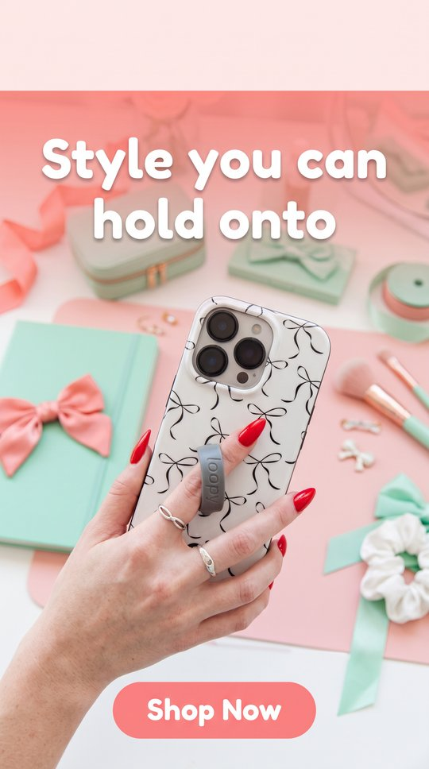
fidelity 1 · text 2 · layout 2
Loop recolored from charcoal to grey, and the hand was reposed with a finger through the loop, so the 'keep the hand and loop interaction' instruction was ignored. Bows pattern and camera are right. The top 12% is a flat pink band.
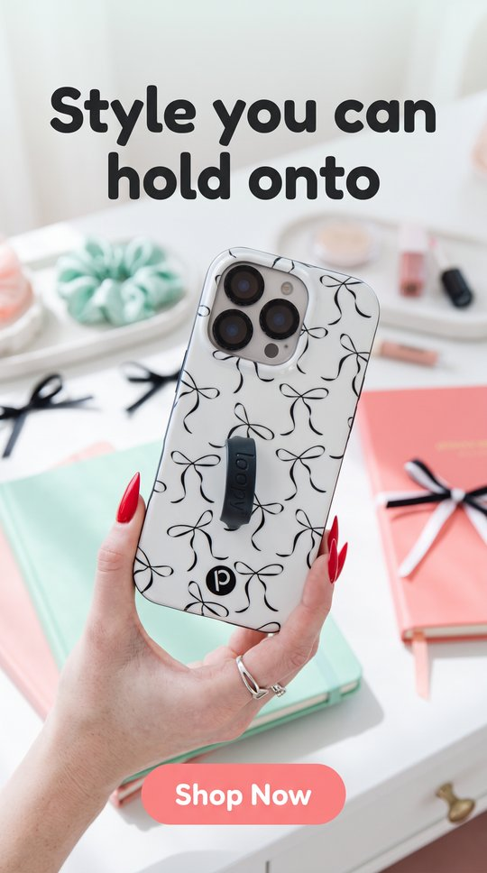
fidelity 2 · text 2 · layout 1
Pattern, charcoal loop, p logo and camera all match. The hand is reposed (the loop is not in use, as in the source). The headline crosses the 12% line. Blurred pseudo-lettering on the notebook prop.
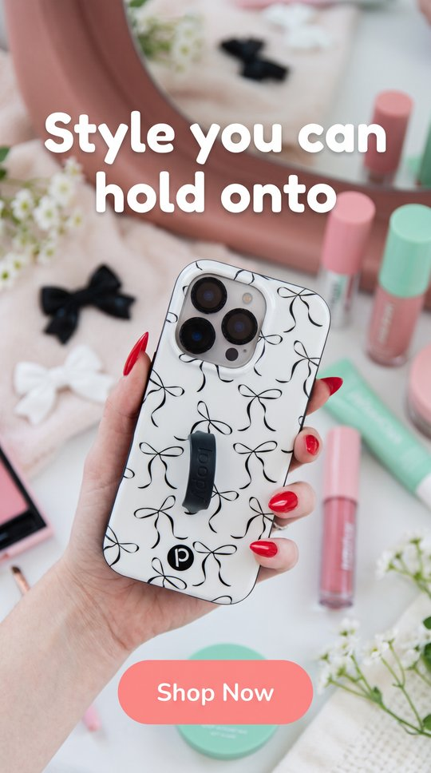
fidelity 2 · text 2 · layout 2
Best of the A row: the pattern matches bow for bow, the loop text orientation matches the source, and the hand is close to the original. Headline is clear of the logo zone. Tiny illegible labels on the cosmetics props.
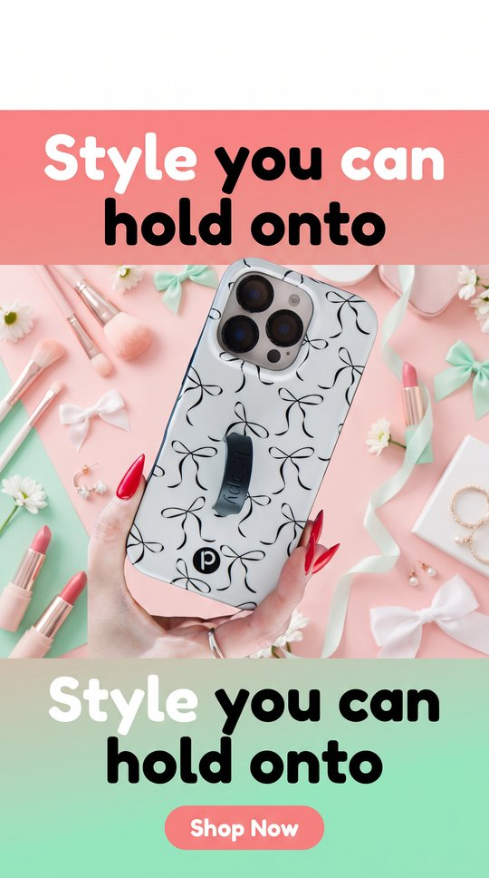
fidelity 2 · text 0 · layout 0
Product is faithful, but the headline is rendered TWICE (above and below the photo) in a banded, template-like layout with an empty white strip on top. A hard text failure.
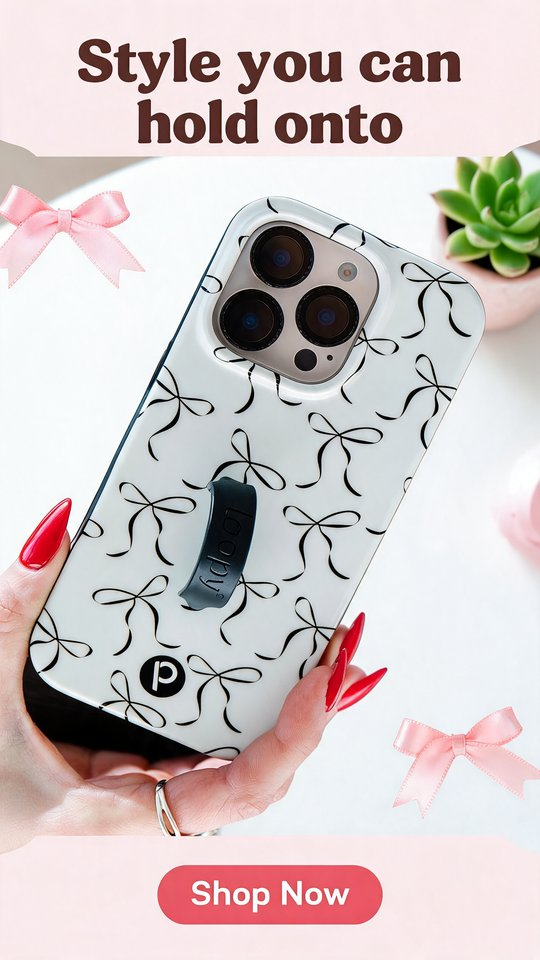
fidelity 2 · text 2 · layout 0
Product is essentially the source photo, kept intact with slight oversharpening. The headline is a serif rather than the requested rounded sans, and its first line sits entirely inside the logo zone.
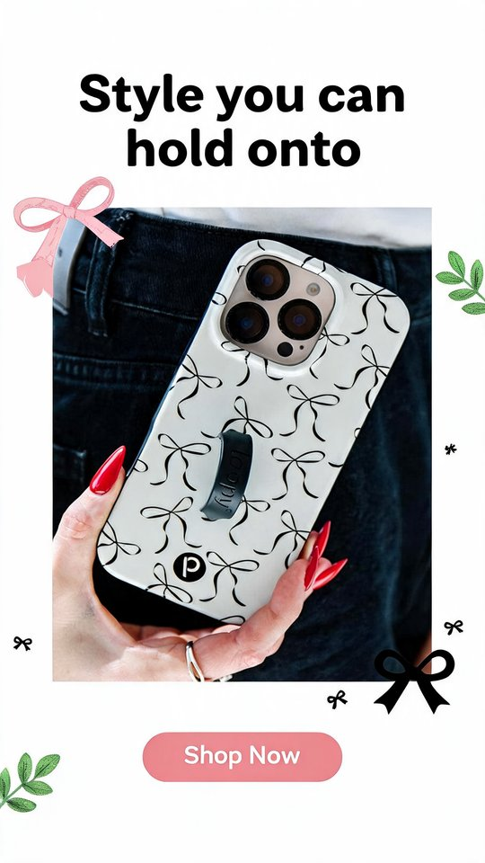
fidelity 2 · text 2 · layout 1
Fidelity is 2 only because it pasted the source photo in as a framed picture with stickers: a collage, not a scene, and visibly soft and upscaled next to the crisp text. The headline crosses the 12% line.
B. Lavender Pearl studio cutout (iridescent)
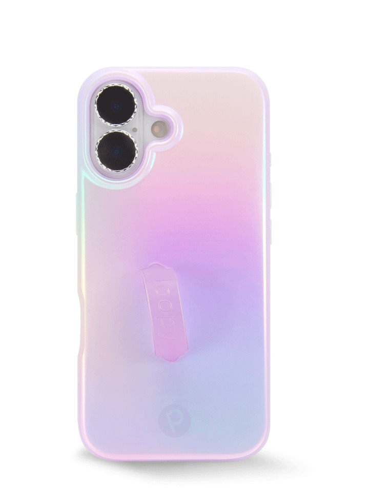
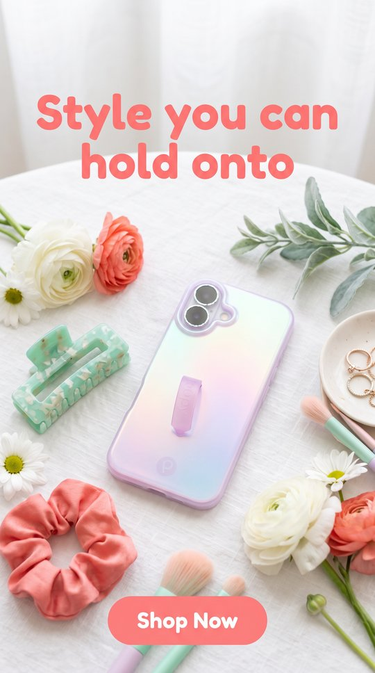
fidelity 1 · text 2 · layout 2
Finish drifted: the pink-to-lilac-to-blue vertical gradient became a rainbow sheen with mint and yellow, the studded lens bezels became flat grey rings, and the loop is shorter. Clean layout.
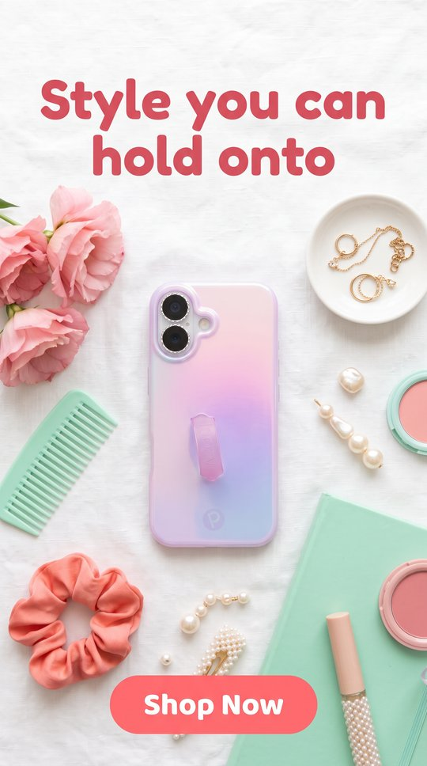
fidelity 2 · text 2 · layout 1
Gradient, studded bezels, loop and p mark all match. The loop is shown raised, which is plausible. The phone is fairly small in frame, and the headline just crosses the 12% line.
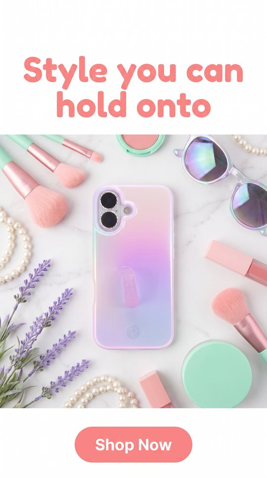
fidelity 2 · text 2 · layout 2
Faithful gradient, bezels, loop and p mark. Headline cap height sits right at the 12% line. The phone sits in a boxed photo panel, which is fine.
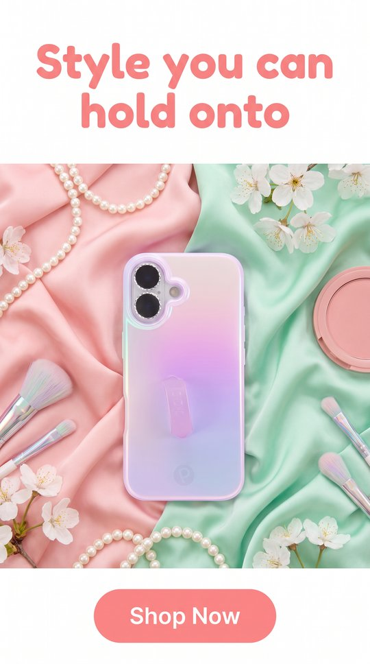
fidelity 2 · text 2 · layout 1
Faithful product, strongest B scene (satin, pearls). The headline starts above the 12% line.
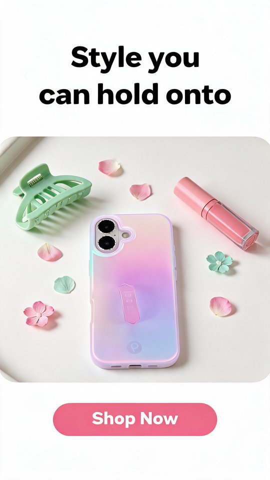
fidelity 2 · text 2 · layout 1
Gradient, bezels and loop match. It added bottom-edge port cutouts the source does not show (plausible for the real case, but invented geometry). The headline wraps differently and crosses the 12% line.
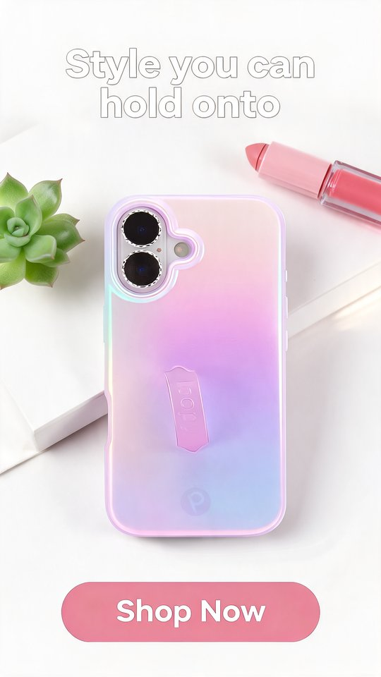
fidelity 2 · text 2 · layout 0
Product is the cutout, near untouched. Spelled exactly, but the headline is a hollow outline in white-on-white, nearly invisible, and it sits in the logo zone.